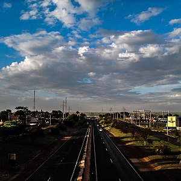

Tarumã, com o nome primitivo de Vila Lex, foi formada a partir de uma vila fundada por Gilberto Lex. Ele herdou uma grande quantia de terras de seu pai, Mathiae Lex, imigrante alemão que chegou ao Brasil em 1825. Esta propriedade se situava na região de Assis, entre a cabeceira da Fortuna e o Rio Paranapanema. Dessas terras ele escolheu as que se localizavam na cabeceira do rio Tarumã e fez ali sua fazenda a qual deu o nome de fazenda “Dourado Tarumã“. A parte restante de suas terras foram divididas em pequenos lotes que passou a vendê-los a pequenos proprietários que então se estabeleceram nas proximidades da fazenda Lex. A partir desse momento a Vila inicia um progresso passando não só a receber novos moradores como também a primeira igreja e a primeira escola, tudo sob os cuidados de Gilberto Lex. A vila foi elevada a Distrito de Paz em 1927 e a município em 1993. O primeiro prefeito do município foi Oscar Gozzi, principal nome no processo de emancipação do município de Tarumã, tendo como vice Waldemar Schwarz, pertencente a uma das primeiras famílias a se mudar para a região. O hino oficial do município é de autoria de Maria Alice Fernandes, cidadã tarumãense que compôs a letra e a melodia do hino, vencedora do concurso em 1996, que contou com participantes da região; dentre os hinos apresentados, o seu foi o escolhido.
O relevo do município é plano e suavemente ondulado.
Constituído 70% por latossolos roxos e 20% por latossolos vermelho-escuros. O restante está dividido entre podzólicos vermelho-amarelo, vermelho-escuro, terra roxa estruturada, solos litólicos e hidromórficos.